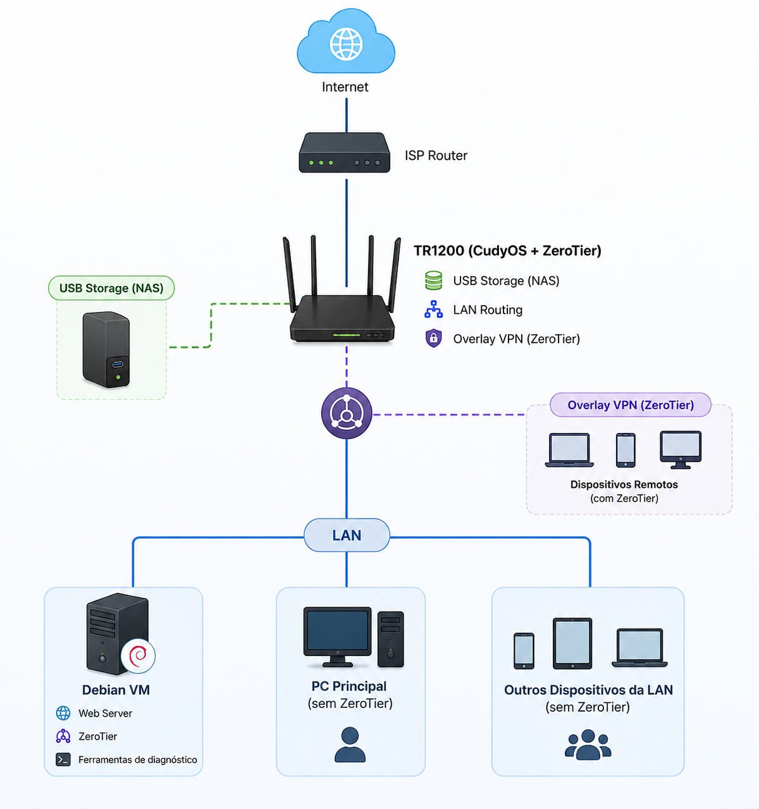

| Dispositivo | Função |
|---|---|
| TR1200 | Gateway VPN |
| VM Debian ARM64 | Serviços |
| USB Storage | NAS |
| PC principal | Cliente LAN |
| Smartphone | Cliente Remoto |
su -
apt update
apt install sudo
usermod -aG sudo USERsudo apt install net-tools
sudo apt install tcpdump
sudo apt install curl
sudo apt install lynxip addr
ps
systemctl status sshcurl -s https://install.zerotier.com | sudo bash
sudo zerotier-cli join NETWORK_IDbusybox httpd -f -p 8080 -h . &
sudo apt install python3 python3-pip
sudo apt install snapdEm ambientes de laboratório e servidores é recomendado utilizar IP estático para:
Verificar interfaces de rede:
ip addrEditar configuração de rede:
sudo nano /etc/network/interfacesExemplo DHCP:
auto enp0s8
iface enp0s8 inet dhcpExemplo IP estático:
auto enp0s8
iface enp0s8 inet static
address 192.168.10.100/24
gateway 192.168.10.1
dns-nameservers 1.1.1.1 8.8.8.8Reiniciar serviço de rede:
sudo systemctl restart networkingObjetivo:
Firmware utilizado CudyOS (baseado em Linux / LEDE/OpenWrt)
Kernel: Linux 4.4.140
Compilador: LEDE GCC 5.4.0
Objetivo:
Configurações realizadas:
Referência oficial utilizada:
How to Remote Connect Cudy Router via ZeroTier (https://www.cudy.com/pt-br/blogs/faq/how-to-remote-connect-cudy-router-via-zerotier?utm_source=chatgpt.com)
Objetivo:
Disponibilizar armazenamento conectado via USB ao TR1200 para acesso compartilhado:
Serviço utilizado: Samba (SMB/CIFS)
Recursos disponibilizados:
Referência oficial utilizada
How to Configure USB Sharing on Cudy Router (https://www.cudy.com/pt-br/blogs/faq/how-to-configure-usb-sharing-on-cudy-router?utm_source=chatgpt.com)
Recursos funcionando * Gateway VPN overlay * Clientes LAN acessando VPN sem ZeroTier * Web server Debian acessível remotamente * NAS via USB/Samba * Roteamento LAN ↔︎ VPN * Diagnóstico via tcpdump/traceroute * VM Debian para serviços